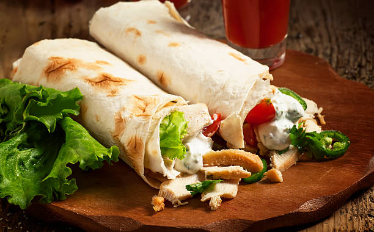

Chicken Shawarma

Chicken shawarma is a Middle Eastern dish made with marinated chicken, wrapped in a soft pita bread and filled with various vegetables such as tomatoes, onions, and lettuce.
The chicken is typically seasoned with a blend of flavorful spices, including cumin, paprika, and turmeric, and then grilled or roasted to tender perfection.
The dish is often served with a variety of sauces, such as garlic yogurt sauce or tahini sauce, to add a delicious tangy and creamy flavor to the wrap.
Chicken shawarma is a popular street food in many countries and is loved for its bold and delicious taste.
Ingredients
- Boneless, skinless chicken breasts or thighs
- Shawarma spice blend (made of cumin, paprika, coriander, turmeric, garlic powder, and other spices)
- Olive oil or vegetable oil
- Lemon juice
- Salt and black pepper
- Pita bread
- Lettuce
- Tomatoes
- Red onion
- Cucumber
- Garlic yogurt sauce or tahini sauce (made of yogurt, garlic, lemon juice, tahini, and other seasonings)
Steps
- Cut the chicken breasts or thighs into thin slices or strips.
- In a bowl, combine the shawarma spice blend, olive oil or vegetable oil, lemon juice, salt, and black pepper. Add the chicken to the bowl and mix until the chicken is fully coated in the spice blend.
- Cover the bowl and marinate the chicken in the refrigerator for at least 30 minutes, or up to overnight.
- Preheat a grill or grill pan over medium-high heat. Grill the chicken for 6-8 minutes on each side, or until fully cooked.
- Warm up the pita bread in the oven or microwave for a few seconds.
- Assemble the shawarma wrap by placing some lettuce, sliced tomatoes, red onion, and cucumber on the pita bread. Add the grilled chicken on top.
- Drizzle garlic yogurt sauce or tahini sauce over the chicken.
- Roll the pita bread tightly to form a wrap.
- Cut the wrap in half and serve immediately. Enjoy!